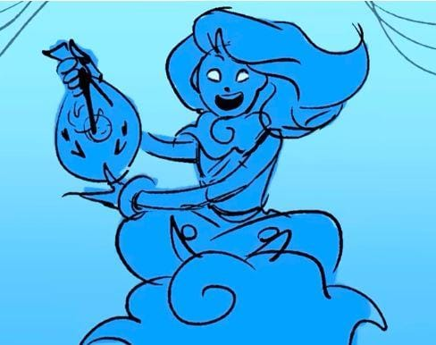

Éolo é o deus dos ventos, responsável por controlar as correntes de ar e as forças que guiam os navios pelo mar. Seu poder é essencial para qualquer jornada marítima, podendo tanto ajudar quanto destruir.
Em determinado momento, ele oferece ajuda a Odisseu de uma maneira única e poderosa. No entanto, essa ajuda depende das escolhas da tripulação, mostrando como até mesmo um presente divino pode trazer consequências inesperadas.